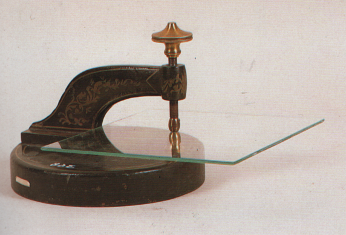

Apparecchio per le lamine vibranti
Scuola di provenienza: Liceo classico "P. Colletta", Avellino
Settore: Acustica
Costruttori: Allemanno G., Italia
Materiali: Ghisa e ottone
Accessori: Lamine di vetro
Stato di conservazione: Buono
Descrizione: Per offrire la possibilità di sperimentare su lastre di forma e natura
diverse, forniamo un supporto unico e cioè una morsetta rigida di grande apertura applicabile ad un
tavolo. Le lamine in esame vengono fissate tra due cuscinetti di fibra per il loro centro o per un altro
punto a piacere. Si spolverizzano poi con limatura di sughero, polverino bianco o semola fine,
servendosi della scatola fornita con l´apparecchio e si eccitano con un archetto su un punto dell´orlo.
La forma simmetrica delle figure nodali resta modificata toccando leggermente la lastra in uno o più
punti dell´orlo. Alle figure più complesse corrispondono i suoni più acuti.
Bibliografia: Magini, Apparecchi per l´insegnamento della fisica Officine Galileo; 1950, pag 147